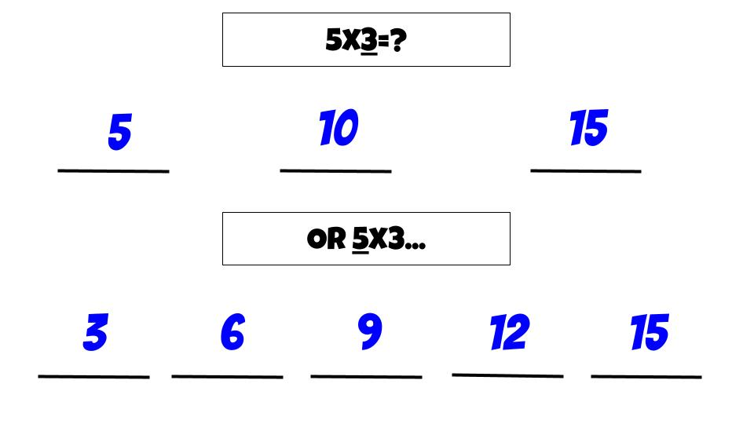

Strategy #2
The second strategy we can use is skip counting. In skip counting
we look at the problem and decide which number we will skip count and the
other number will be how many times we skip count until we stop. For example,
if we have the problem 5x3, I would choose 5 to skip count by and that means
I need to do this 3 times. So I would skip count 5, 10, 15 and then stop at the third
time. So the answer would be 15.
